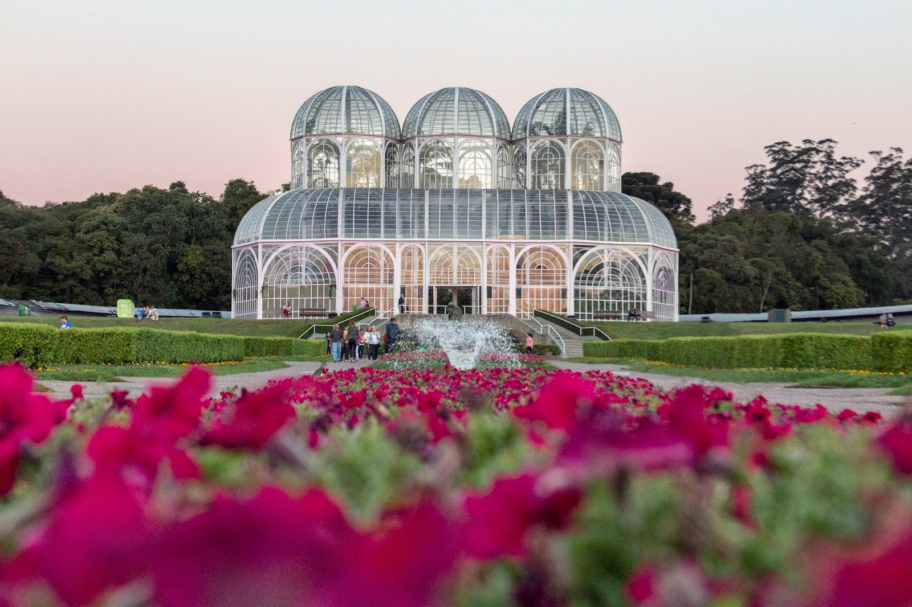

↳ algumas dicas de passeios que você pode fazer quando estiver no Jardim Botânico de Curitiba.
MUSEU BOTÂNICO

O projeto é do arquiteto Abrão Assad, que também planejou o Museu Botânico, incorporado ao Jardim Botânico em 1992, com auditório, centro de pesquisas, espaço para biblioteca especializada e sala de exposições temporárias e permanentes. Atualmente o Museu Botânico de Curitiba tem o quarto maior herbário do país, com aproximadamente de 400 mil exsicatas – plantas secas preparadas para coleção botânica – além de coleção de amostras de madeiras e frutos. E no parque funciona um centro de pesquisa da flora do Paraná e do Brasil. O Museu Botânico do Jardim Botânico de Curitiba possui espaço expositivo, biblioteca e auditório.
Atualmente, o Museu Botânico de Curitiba possui o quarto maior herbário do país, com cerca de 400 mil plantas secas e, claro, um grande número de amostras de madeira e frutas.
Mas não é só isso, além das incríveis coleções citadas, o parque também conta com um centro de pesquisas botânicas no estado do Paraná e no Brasil. Vale a pena visitar e conhecer mais sobre as coleções e pesquisas realizadas pelo Jardim Botânico de Curitiba.
ESTUFA
O jardim contém inúmeros exemplares vegetais do Brasil e de outros países, espalhados por alamedas e estufas de ferro e vidro, a principal delas com três abóbadas do estilo Art nouveau foi inspirada no Palácio de Cristal de Londres, do século XIX.
A estufa é climatizada e mantém espécies da Floresta Atlântica como Caraguatá, Caetê e Palmito. Do seu interior é possível ter uma vista privilegiada do jardim em estilo francês.
O conservatório principal apresenta três abóbadas Art Nouveau inspiradas no Palácio de Cristal de Londres do século XIX. A estufa é totalmente aquecida e abriga espécies da Mata Atlântica, como Caraguatá, Caetê e Palmito.
É um super privilégio de ver o jardim francês do seu interior. Quando pensamos no Jardim Botânico de Curitiba, a primeira coisa que vem à mente é a estufa principal.
JARDIM DAS SENSAÇÕES
Inaugurado em dezembro de 2008, o Jardim das Sensações é um espaço delimitado por cerca viva, onde os sentimentos do visitante são tentados, por meio do contato direto com plantas de diferentes formas, texturas e aromas.
Através da cerca e do túnel vegetal é possível ver as cores da natureza, sentir com as mãos a textura, a forma e o tamanho das plantas, ouvir o som da cascata e do vento, sentir o perfume das flores e da vegetação. O percurso pode ser feito com os olhos vendados ou não.
As plantas são identificadas também em braile e os monitores ficam à disposição para o esclarecimento de dúvidas e explicações mais detalhadas.
Fazem parte do cenário, ainda, canteiros e uma cachoeira, além de uma instalação do programa Jardins de Mel com abelhas mirins, sem ferrão.
ESPAÇO CULTURAL FRANS KRAJCBERG
O Espaço Cultural Frans Krajcberg, com a exposição permanente "A Revolta", de obras do artista polonês naturalizado brasileiro Frans Krajcberg. O nome "A Revolta" expressa o sentimento do artista com relação à destruição sem limites provocada pelo homem nas florestas brasileiras.
Nessa galeria estão expostas 110 obras de grande porte, todas elas feitas a partir de restos de árvores queimadas ou derrubadas de forma ilegal. Há também exposição de fotos tiradas pelo próprio escultor, venda de livros relacionados ao artista e a possibilidade de visitas monitoradas. A principal finalidade do espaço é, de acordo com Krajcberg, a conscientização ambiental.
Cipós, troncos de madeira queimada são a matéria-prima de suas criações, sempre no sentido no sentido de despertar a indignação contra as ações devastadoras do homem.
Entre as obras que compõem o acervo do novo espaço estão esculturas, relevos e fotografias, além de vídeos, textos e publicações que serão a base para futuras ações educativas e servirão para a formação de um centro de documentação.